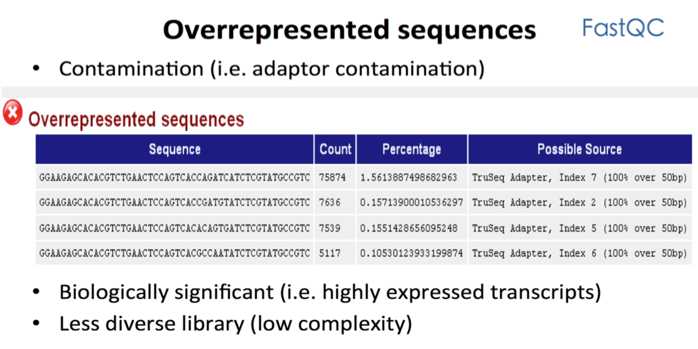
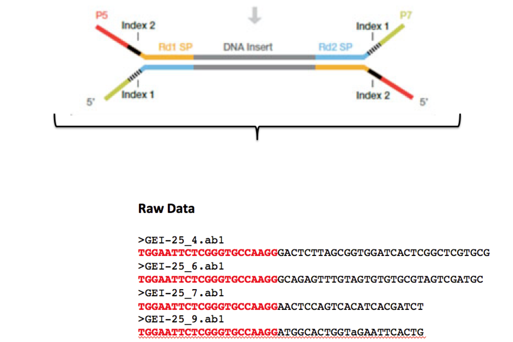
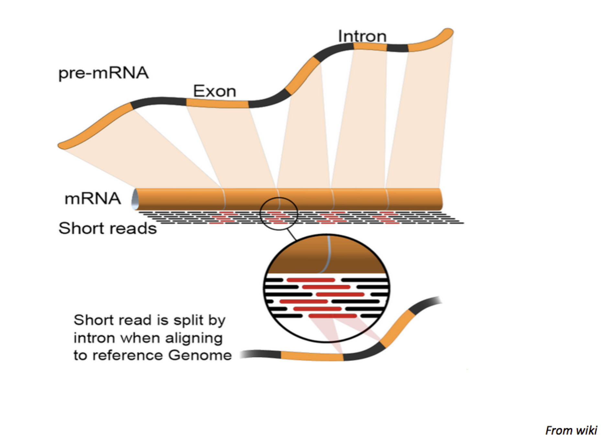
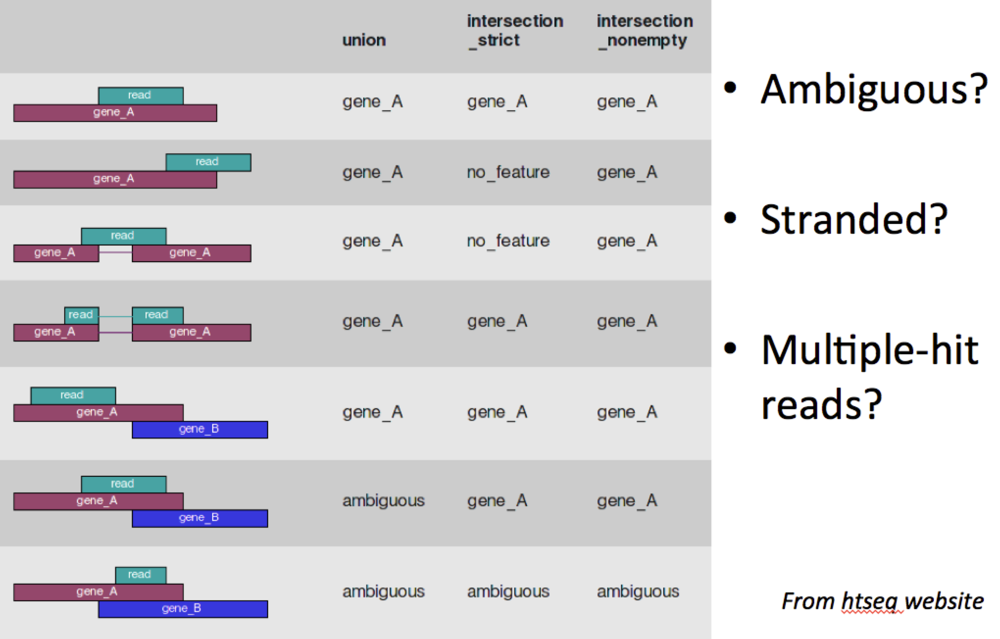
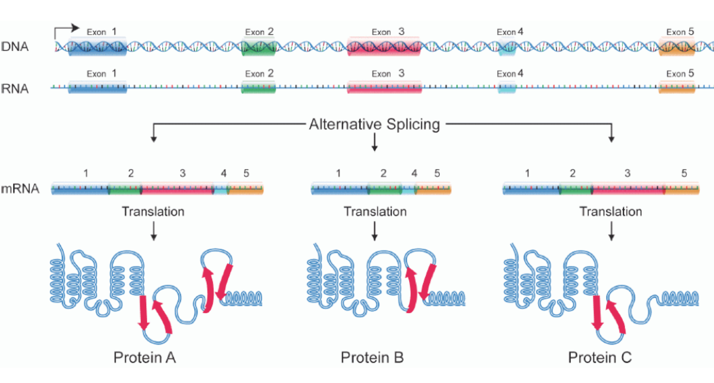

Introduction to RNA-seq Data Analysis
Our practice in Ciaudo Lab
Jian Yu
Introduction
- What is RNA-seq?
- Using next-generation sequencing (NGS) to reveal the presence and quantity of RNA in a biological sample at a given moment
- Using next-generation sequencing (NGS) to reveal the presence and quantity of RNA in a biological sample at a given moment
- Bulk mRNA-seq
- Advantages
- High sensitivity
- Unbiased
- Novel transcripts
Formulate your question
- Two group comparison: WT vs KO
- Nested Design: Treatment effect in different cancer subtypes
- Time series: Gene expression pattern along embryonic development
Discussion
- With your PI: budget, schedule
- Sequencing facility: protocol, timeslot, quotation
- IT support: data transimisson/storage
- Bioinformaticians: experiment design, data analysis
Experiment Design
- What is your biological interest?
- Differentially Expressed Genes/Transcripts?
- Differential Splicing Events?
- Noncoding RNAs?
- Fusion Transcripts?
- Paired sample?
- Batch Effect?
- How many replicates? 3?
Protocol Choice
- PolyA/Ribosome-?
- Single-end/Paired-end?
- Stranded/Non-stranded?
- Read Size?
- Sequencing Depth?
Case Report
- Experiment Design: Hepatocellular Carcinoma, 4 samples
- Interesting points: point mutation in mRNA, miss-regulated genes, and choromosome re-arrangments
- Add adjacent tissue as paired controls
- Double sequencing depth, and switch to paired-end
- Increasing sample size from 4 to 12
Quality Check

Quality Check

Quality Check

Preprocessing

Data Preprocessing is Essential
- Bad Data often present
- Low-quality sequence (artifacts)
Adapter Contamination
Analysis of bad data should be avoided
Is expensive: computing + man power
Can compromise downstream analysis
Mapping

Mapping
For RNA-seq, gaps and mismatches should be allowed
QC after mapping
Counting: FeatureCounts

Choice of Gene Model: Ensembl

Statistical Modeling
There is no
correct model
Models are approximations of the truth
There is a
useful model
Understanding the mechanisms of the system for better choices of model alternatives
Statistical Modeling
Negative Binomial Model
Shrinkage is necessary

Statistical Modeling
Shrinkage
Complex Experiment Design
Single Replicate
Outlier Detection
Independent Filtering
Multiple Testing Correction
We are doing high-throughput experiments which compare thousands of units simultaneously
At this scale, rare events could happen just by chance
Event A: 1 in 1000 chance of happening (p=0.001)
And the statistical test performed for 2 × 104 times
20 occurrence of false positives, even though using a
very strict
p-valueNEVER BELIEVE raw p-value in high-throughput experiments, use adjusted P-value or FDR
Alternative Splicing

Alternative Splicing
Isoform-centric
Exon-centric: DEXSeq
A Working Pipeline
- FASTQC: Quality Control
- Trimmomatic: Adaptor Removal
- STAR: Mapping
- FeatureCounts: Counting
- DESeq2: Differential Expression
- DEXSeq: Differential Splicing
THANKS FOR YOUR ATTENTION
acknowledgements:
- SIS, Michal Okoniewski,
- Ciaudo Lab